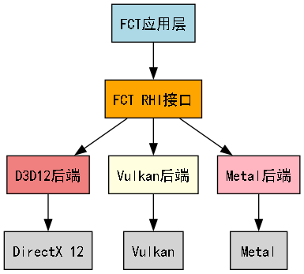
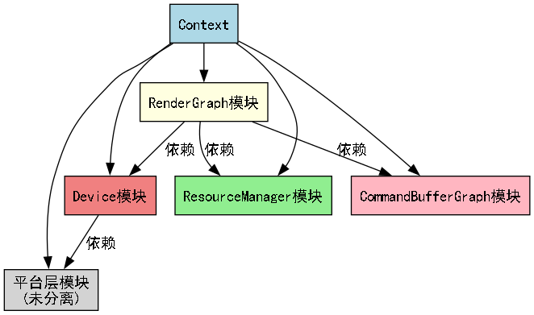
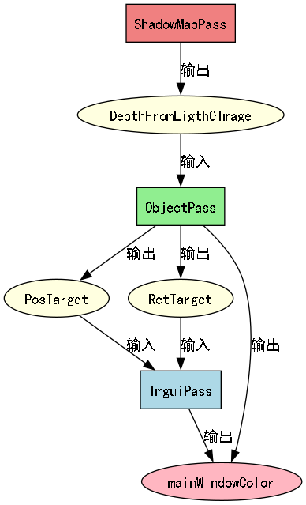

载入中...
搜索中...
未找到
RHI - 渲染硬件接口
什么是RHI？
RHI（Render Hardware Interface，渲染硬件接口）是一个抽象层，它隐藏了不同图形API之间的差异，为上层应用提供统一的渲染接口。
想象一下：
- 你想开发一个跨平台的图形应用
- Windows上有DirectX，Linux/Mac上有OpenGL，移动设备上有OpenGL ES，现代平台还有Vulkan
- 每个API的调用方式、概念、数据格式都不同
- RHI就像一个"翻译官"，让你用同一套代码在所有平台上运行
简单来说：RHI让你不用关心底层用的是什么图形API，专注于渲染逻辑本身。
为什么需要RHI？
问题：图形API的碎片化

解决方案：RHI抽象层

FCT中的RHI设计
架构概览

Context类 - 渲染上下文的核心
在FCT中，Context类是整个渲染系统的核心，它包含了多个专门的模块：

1. Device模块 - RHI资源创建器
职责：负责创建所有的RHI资源
Context提供了强类型的createResource模板方法，支持创建各种类型的资源：
template <typename T>
T* createResource();
支持的资源类型：
着色器资源
// 高级着色器（FCT封装）
auto vs = m_ctx->createResource<VertexShader>();
auto ps = m_ctx->createResource<PixelShader>();
// 底层RHI着色器
auto rhiVs = m_ctx->createResource<RHI::VertexShader>();
auto rhiPs = m_ctx->createResource<RHI::PixelShader>();
缓冲区资源
// 常量缓冲区
auto constBuffer = m_ctx->createResource<RHI::ConstBuffer>();
// 顶点和索引缓冲区
auto vertexBuffer = m_ctx->createResource<RHI::VertexBuffer>();
auto indexBuffer = m_ctx->createResource<RHI::IndexBuffer>();
// 输入布局
auto inputLayout = m_ctx->createResource<RHI::InputLayout>();
图像和纹理资源
// 高级图像封装
auto image = m_ctx->createResource<Image>();
auto singleBufferImage = m_ctx->createResource<SingleBufferImage>();
auto multiBufferImage = m_ctx->createResource<MutilBufferImage>();
// 底层RHI图像
auto rhiImage = m_ctx->createResource<RHI::Image>();
// 视图资源
auto renderTargetView = m_ctx->createResource<RHI::RenderTargetView>();
auto depthStencilView = m_ctx->createResource<RHI::DepthStencilView>();
auto textureView = m_ctx->createResource<RHI::TextureView>();
渲染状态资源
// 渲染状态
auto rasterState = m_ctx->createResource<RasterizationState>();
auto blendState = m_ctx->createResource<BlendState>();
auto sampler = m_ctx->createResource<Sampler>();
渲染管线资源
// 交换链
auto swapchain = m_ctx->createResource<RHI::Swapchain>();
// 渲染Pass
auto passGroup = m_ctx->createResource<RHI::PassGroup>();
auto pass = m_ctx->createResource<RHI::Pass>();
auto passResource = m_ctx->createResource<PassResource>();
同步和命令资源
// 同步原语
auto fence = m_ctx->createResource<RHI::Fence>();
auto semaphore = m_ctx->createResource<RHI::Semaphore>();
// 命令相关
auto commandPool = m_ctx->createResource<RHI::CommandPool>();
// 描述符
auto descriptorPool = m_ctx->createResource<RHI::DescriptorPool>();
// 资源池
auto semaphorePool = m_ctx->createResource<SemaphorePool>();
auto fencePool = m_ctx->createResource<FencePool>();
2. ResourceManager模块 - 资源依赖管理器
职责：管理图像资源之间的依赖关系
3. CommandBufferGraph模块 - 同步和命令管理器
职责：管理同步相关的资源和CommandBuffer
4. RenderGraph模块 - 渲染图管理器
职责：管理整个渲染流程的图结构
RenderGraph通过声明式的API来构建渲染流程，自动处理资源依赖和同步：
// 获取RenderGraph模块
auto graph = m_ctx->getModule<RenderGraph>();
// 添加渲染Pass
graph->addPass(passName, ...resources);
// 编译渲染图
graph->compile();
Pass资源类型
清除操作：
// 启用Pass清除
EnablePassClear(ClearType::depth, 1.0f) // 清除深度
EnablePassClear(ClearType::color, Vec4(0,0,0,1)) // 清除颜色
EnablePassClear(ClearType::color | ClearType::depthStencil, // 清除颜色和深度
Vec4(0,0,0,1))
深度模板缓冲区：
// 创建深度缓冲区
DepthStencil("DepthFromLigth0Image", // 资源名称
2048, 2048, // 尺寸
Format::D32_SFLOAT, // 格式
Samples::sample_1) // 采样数
// 使用窗口深度缓冲区
DepthStencil("mainWindowDS", m_wnd)
渲染目标：
// 创建渲染目标
Target("PosTarget") // 自动创建
Target("RetTarget") // 自动创建
// 使用窗口渲染目标
Target("mainWindowColor", m_wnd)
纹理输入：
// 将其他Pass的输出作为纹理输入
Texture("DepthFromLigth0Image") // 阴影贴图
Texture("PosTarget") // 位置纹理
Texture("RetTarget") // 其他纹理
完整的渲染图示例
auto graph = m_ctx->getModule<RenderGraph>();
// 1. 阴影贴图Pass
graph->addPass(
"ShadowMapPass",
EnablePassClear(ClearType::depth, 1.0f),
DepthStencil("DepthFromLigth0Image",
2048, 2048,
Format::D32_SFLOAT,
Samples::sample_1
)
);
// 2. 主要物体渲染Pass
graph->addPass(
"ObjectPass",
Texture("DepthFromLigth0Image"), // 使用阴影贴图
EnablePassClear(ClearType::color | ClearType::depthStencil,
Vec4(0,0,0,1)),
Target("mainWindowColor", m_wnd), // 主窗口颜色
Target("PosTarget"), // 位置缓冲区
Target("RetTarget"), // 其他缓冲区
DepthStencil("mainWindowDS", m_wnd) // 主窗口深度
);
// 3. ImGui界面Pass
graph->addPass(
"ImguiPass",
Target("mainWindowColor", m_wnd), // 渲染到主窗口
Texture("PosTarget"), // 读取位置纹理
Texture("RetTarget"), // 读取其他纹理
DepthStencil("mainWindowDS", m_wnd) // 使用主窗口深度
);
// 编译渲染图（自动处理依赖和同步）
graph->compile();
渲染图的优势
- 自动依赖管理：RenderGraph自动分析Pass之间的资源依赖关系
- 资源生命周期优化：自动管理临时资源的创建和销毁
- 内存优化：重用不再需要的资源内存
- 同步优化：自动插入必要的同步点
- 声明式API：简洁直观的Pass声明方式
